GO enrichment of all genes obtained¶
We use GO_enrichment_FDR.R which allows us to choose between multiple procedures for multiple testing correction. Here we are interested in controlling the FDR ; we can use either pAdjustMethod = "BH" (Benjamini-Hochberg, default parameter) or pAdjustMethod = "fdr".
All results (list of genes and detailed GO enrichment) can be found here:
/work2/project/regenet/workspace/thoellinger/shared/2022/promoter_capture_hic/
Dependencies¶
We use R 4.0. We need the clusterProfiler package. See custom_go.md for installation details.
Main remarks¶
- From time to time, one may get the following error while using
GO_enrichment_FDR.R:
Error in `[.data.frame`(d, , 2) : undefined columns selected
This is expected, and should be considered as a warning only (I did not take the time to handle the case with an exception). This happens when no significant GO terms are found ; in such case, no graphical outputs are computed.
Collecting the list of genes of interest¶
cd /work2/project/regenet/workspace/thoellinger/shared/2022/promoter_capture_hic/
We obtained this list using our R markdown doing network analysis of E-G pairs starting from genes directly involved in hemochromatosis or involved in the regulation of iron metabolism.
We saved this list of 54 (12 known + 42 inferred) genes as new_genes_v1.list. For each one of the 13 initial genes, we also saved separately the corresponding inferred genes. I a few cases, no genes were inferred starting from one of the 13 genes (+ for one of the 13, we did not have CHiC data at all):
results ... 13_initial_genes.list # 13 new_genes_v1.list # 54 separate BMP6.list 1 CIAPIN1.list # 8 CYBRD1.list 1 HFE2.list # 5 HFE.list 1 NEO1.list # 2 SLC11A2.list # 8 SLC39A14.list # 4 SLC40A1.list 1 TFR2.list # 15 TFRC.list 1 TMPRSS6.list # 7
GO enrichment¶
module load system/R-4.0.4_gcc-9.3.0
All 54 genes (original + inferred)¶
mkdir -p GO_FDR/all_genes/symbol
Rscript GO_enrichment_FDR.R -k "SYMBOL" -G results/new_genes_v1.list -f 0.05 -c "BP" -a "BH" -o "default_universe" -d "GO_FDR/all_genes/symbol"
... [1] "Loading input data..." [1] "Warning: using defaut universe automatically provided by the clusterProfiler package" [1] "Done." [1] "Computing GO enrichment..." `universe` is not in character and will be ignored... [1] "Done." [1] "18866 (default) background genes" [1] "54 provided genes; 49 found by `enrichGO`" [1] "Computed GO enrichment (whether significant or not) for 1086 distinct GO terms" [1] "Of those 1086 GO terms, 18 have a BH-adjusted p-val < 0.05" [1] "Writing outputs tables..." [1] "Done. Writing output images..." ... [1] "Done."

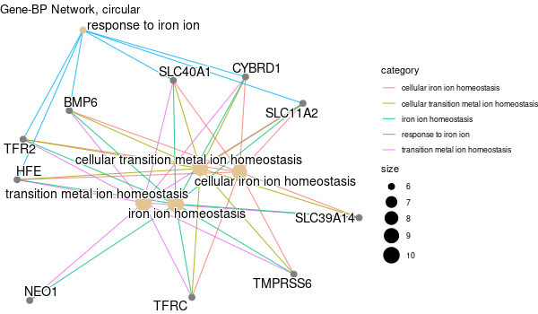


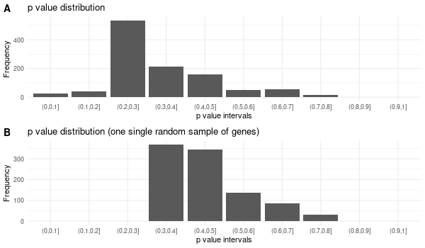
All 42 genes (inferred only ; w/o original genes)¶
mkdir -p GO_FDR/all_genes_wo_orig/symbol
Rscript GO_enrichment_FDR.R -k "SYMBOL" -G results/new_genes_v1_without_original.list -f 0.05 -c "BP" -a "BH" -o "default_universe" -d "GO_FDR/all_genes_wo_orig/symbol"
... [1] "Loading input data..." [1] "Warning: using defaut universe automatically provided by the clusterProfiler package" [1] "Done." [1] "Computing GO enrichment..." `universe` is not in character and will be ignored... [1] "Done." [1] "18866 (default) background genes" [1] "42 provided genes; 38 found by `enrichGO`" [1] "Computed GO enrichment (whether significant or not) for 740 distinct GO terms" [1] "Of those 740 GO terms, 0 have a BH-adjusted p-val < 0.05" [1] "Writing outputs tables..." [1] "Done. Writing output images..." ... [1] "Done."
All genes co-expressed in liver¶
Those are: HFE + TFR2 + HJV (HFE2) + HAMP + TMPRSS6
Note: we have no CHiC data for HAMP, and there are no inferred genes from HFE.
mkdir -p GO_FDR/genes_inferred_from_that_expressed_in_liver/symbol
Rscript GO_enrichment_FDR.R -k "SYMBOL" -G results/genes_inferred_from_that_expressed_in_liver.list -f 0.05 -c "BP" -a "BH" -o "default_universe" -d "GO_FDR/genes_inferred_from_that_expressed_in_liver/symbol"
... [1] "Loading input data..." [1] "Warning: using defaut universe automatically provided by the clusterProfiler package" [1] "Done." [1] "Computing GO enrichment..." `universe` is not in character and will be ignored... [1] "Done." [1] "18866 (default) background genes" [1] "24 provided genes; 21 found by `enrichGO`" [1] "Computed GO enrichment (whether significant or not) for 421 distinct GO terms" [1] "Of those 421 GO terms, 4 have a BH-adjusted p-val < 0.05" [1] "Writing outputs tables..." [1] "Done. Writing output images..." ... [1] "Done."


All genes expressed in intestine¶
Those are: DCYTB (CYBRD1) / DMT1 (SLC11A2) / SLC40A1
Note: there are no inferred genes from CYBRD1 nor SLC40A1 => so the GO enrichment is basically that of SLC11A2.
Each original gene separately¶
Inferred from CIAPIN1¶
mkdir -p GO_FDR/separate/CIAPIN1/symbol
Rscript GO_enrichment_FDR.R -k "SYMBOL" -G results/separate/CIAPIN1.list -f 0.05 -c "BP" -a "BH" -o "default_universe" -d "GO_FDR/separate/CIAPIN1/symbol"
... [1] "Loading input data..." [1] "Warning: using defaut universe automatically provided by the clusterProfiler package" [1] "Done." [1] "Computing GO enrichment..." `universe` is not in character and will be ignored... [1] "Done." [1] "18866 (default) background genes" [1] "8 provided genes; 7 found by `enrichGO`" [1] "Computed GO enrichment (whether significant or not) for 313 distinct GO terms" [1] "Of those 313 GO terms, 64 have a BH-adjusted p-val < 0.05" [1] "Writing outputs tables..." [1] "Done. Writing output images..." ... [1] "Done."


Inferred from CIAPIN1 w/o CIAPIN1¶
mkdir -p GO_FDR/separate/CIAPIN1_wo_orig/symbol
Rscript GO_enrichment_FDR.R -k "SYMBOL" -G results/separate/CIAPIN1_wo_original.list -f 0.05 -c "BP" -a "BH" -o "default_universe" -d "GO_FDR/separate/CIAPIN1_wo_orig/symbol"
... [1] "Loading input data..." [1] "Warning: using defaut universe automatically provided by the clusterProfiler package" [1] "Done." [1] "Computing GO enrichment..." `universe` is not in character and will be ignored... [1] "Done." [1] "18866 (default) background genes" [1] "7 provided genes; 6 found by `enrichGO`" [1] "Computed GO enrichment (whether significant or not) for 310 distinct GO terms" [1] "Of those 310 GO terms, 73 have a BH-adjusted p-val < 0.05" [1] "Writing outputs tables..." [1] "Done. Writing output images..." ... [1] "Done."


Inferred from HFE2¶
mkdir -p GO_FDR/separate/HFE2/symbol
Rscript GO_enrichment_FDR.R -k "SYMBOL" -G results/separate/HFE2.list -f 0.05 -c "BP" -a "BH" -o "default_universe" -d "GO_FDR/separate/HFE2/symbol"
... [1] "Loading input data..." [1] "Warning: using defaut universe automatically provided by the clusterProfiler package" [1] "Done." [1] "Computing GO enrichment..." `universe` is not in character and will be ignored... [1] "Done." [1] "18866 (default) background genes" [1] "5 provided genes; 3 found by `enrichGO`" [1] "Computed GO enrichment (whether significant or not) for 17 distinct GO terms" [1] "Of those 17 GO terms, 15 have a BH-adjusted p-val < 0.05" [1] "Writing outputs tables..." [1] "Done. Writing output images..." ... [1] "Done."


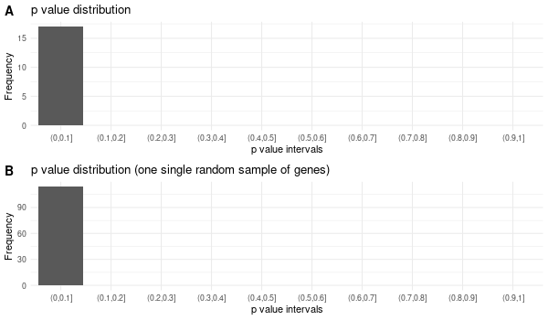
Inferred from HFE2 w/o HFE2¶
mkdir -p GO_FDR/separate/HFE2_wo_orig/symbol
Rscript GO_enrichment_FDR.R -k "SYMBOL" -G results/separate/HFE2_wo_original.list -f 0.05 -c "BP" -a "BH" -o "default_universe" -d "GO_FDR/separate/HFE2_wo_orig/symbol"
... [1] "Loading input data..." [1] "Warning: using defaut universe automatically provided by the clusterProfiler package" [1] "Done." [1] "Computing GO enrichment..." `universe` is not in character and will be ignored... [1] "Done." [1] "18866 (default) background genes" [1] "4 provided genes; 3 found by `enrichGO`" [1] "Computed GO enrichment (whether significant or not) for 17 distinct GO terms" [1] "Of those 17 GO terms, 15 have a BH-adjusted p-val < 0.05" [1] "Writing outputs tables..." [1] "Done. Writing output images..." ... [1] "Done."
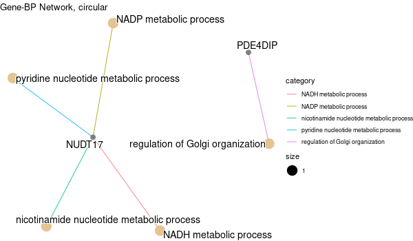


Inferred from NEO1¶
mkdir -p GO_FDR/separate/NEO1/symbol
Rscript GO_enrichment_FDR.R -k "SYMBOL" -G results/separate/NEO1.list -c "BP" -a "BH" -o "default_universe" -d "GO_FDR/separate/NEO1/symbol"
... [1] "Loading input data..." [1] "Warning: using defaut universe automatically provided by the clusterProfiler package" [1] "Done." [1] "Computing GO enrichment..." `universe` is not in character and will be ignored... [1] "Done." [1] "18866 (default) background genes" [1] "2 provided genes; 2 found by `enrichGO`" [1] "Computed GO enrichment (whether significant or not) for 45 distinct GO terms" [1] "Of those 45 GO terms, 45 have a BH-adjusted p-val < 0.1" [1] "Writing outputs tables..." [1] "Done. Writing output images..." ... [1] "Done."
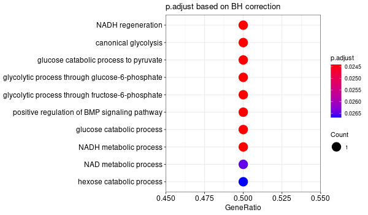

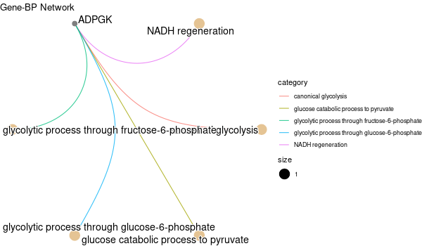

Inferred from NEO1 w/o NEO1¶
mkdir -p GO_FDR/separate/NEO1_wo_orig/symbol
Rscript GO_enrichment_FDR.R -k "SYMBOL" -G results/separate/NEO1_wo_original.list -c "BP" -a "BH" -o "default_universe" -d "GO_FDR/separate/NEO1_wo_orig/symbol"
... [1] "Loading input data..." [1] "Warning: using defaut universe automatically provided by the clusterProfiler package" [1] "Done." [1] "Computing GO enrichment..." `universe` is not in character and will be ignored... [1] "Done." [1] "18866 (default) background genes" [1] "1 provided genes; 1 found by `enrichGO`" [1] "Computed GO enrichment (whether significant or not) for 31 distinct GO terms" [1] "Of those 31 GO terms, 31 have a BH-adjusted p-val < 0.1" [1] "Writing outputs tables..." [1] "Done. Writing output images..." wrong orderBy parameter; set to default `orderBy = "x"` [1] "Writing last output image (this one might take some time)..." `universe` is not in character and will be ignored... No gene set have size > 10 ... --> return NULL... Warning message: The `add` argument of `group_by()` is deprecated as of dplyr 1.0.0. Please use the `.add` argument instead. This warning is displayed once every 8 hours. Call `lifecycle::last_warnings()` to see where this warning was generated. Error in UseMethod("mutate") : no applicable method for 'mutate' applied to an object of class "NULL" Calls: pbar -> %>% -> ggplot -> summarise -> group_by -> mutate Execution halted


Inferred from SLC11A2¶
mkdir -p GO_FDR/separate/SLC11A2/symbol
Rscript GO_enrichment_FDR.R -k "SYMBOL" -G results/separate/SLC11A2.list -c "BP" -a "BH" -o "default_universe" -d "GO_FDR/separate/SLC11A2/symbol"
... [1] "Loading input data..." [1] "Warning: using defaut universe automatically provided by the clusterProfiler package" [1] "Done." [1] "Computing GO enrichment..." `universe` is not in character and will be ignored... [1] "Done." [1] "18866 (default) background genes" [1] "8 provided genes; 8 found by `enrichGO`" [1] "Computed GO enrichment (whether significant or not) for 104 distinct GO terms" [1] "Of those 104 GO terms, 18 have a BH-adjusted p-val < 0.1" [1] "Writing outputs tables..." [1] "Done. Writing output images..." ... [1] "Done."
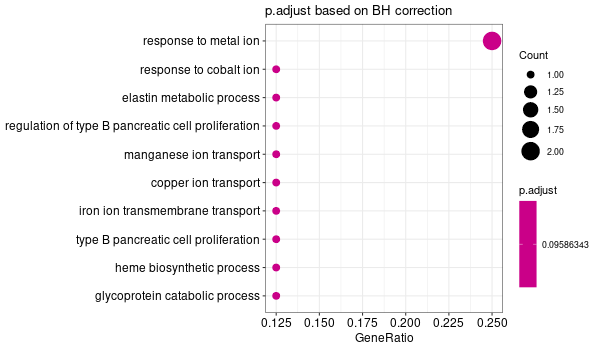


Inferred from SLC11A2 w/o SLC11A2¶
mkdir -p GO_FDR/separate/SLC11A2_wo_orig/symbol
Rscript GO_enrichment_FDR.R -k "SYMBOL" -G results/separate/SLC11A2_wo_original.list -c "BP" -a "BH" -o "default_universe" -d "GO_FDR/separate/SLC11A2_wo_orig/symbol"
... [1] "Loading input data..." [1] "Warning: using defaut universe automatically provided by the clusterProfiler package" [1] "Done." [1] "Computing GO enrichment..." `universe` is not in character and will be ignored... [1] "Done." [1] "18866 (default) background genes" [1] "7 provided genes; 7 found by `enrichGO`" [1] "Computed GO enrichment (whether significant or not) for 68 distinct GO terms" [1] "Of those 68 GO terms, 0 have a BH-adjusted p-val < 0.1" [1] "Writing outputs tables..." [1] "Done. Writing output images..." Error in `[.data.frame`(d, , 2) : undefined columns selected Calls: upsetplot ... eval_tidy -> split -> split.default -> [ -> [.data.frame Execution halted
Inferred from SLC39A14¶
mkdir -p GO_FDR/separate/SLC39A14/symbol
Rscript GO_enrichment_FDR.R -k "SYMBOL" -G results/separate/SLC39A14.list -c "BP" -a "BH" -o "default_universe" -d "GO_FDR/separate/SLC39A14/symbol"
... [1] "Loading input data..." [1] "Warning: using defaut universe automatically provided by the clusterProfiler package" [1] "Done." [1] "Computing GO enrichment..." `universe` is not in character and will be ignored... [1] "Done." [1] "18866 (default) background genes" [1] "4 provided genes; 4 found by `enrichGO`" [1] "Computed GO enrichment (whether significant or not) for 70 distinct GO terms" [1] "Of those 70 GO terms, 69 have a BH-adjusted p-val < 0.1" [1] "Writing outputs tables..." [1] "Done. Writing output images..." ... [1] "Done."
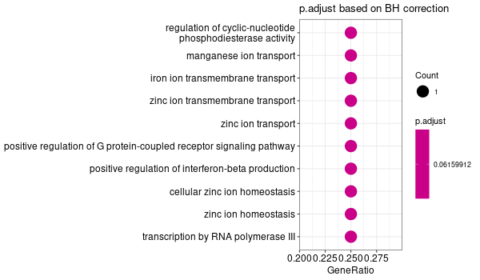


Inferred from SLC39A14 w/o SLC39A14¶
mkdir -p GO_FDR/separate/SLC39A14_wo_orig/symbol
Rscript GO_enrichment_FDR.R -k "SYMBOL" -G results/separate/SLC39A14_wo_original.list -c "BP" -a "BH" -o "default_universe" -d "GO_FDR/separate/SLC39A14_wo_orig/symbol"
... [1] "Loading input data..." [1] "Warning: using defaut universe automatically provided by the clusterProfiler package" [1] "Done." [1] "Computing GO enrichment..." `universe` is not in character and will be ignored... [1] "Done." [1] "18866 (default) background genes" [1] "3 provided genes; 3 found by `enrichGO`" [1] "Computed GO enrichment (whether significant or not) for 19 distinct GO terms" [1] "Of those 19 GO terms, 19 have a BH-adjusted p-val < 0.1" [1] "Writing outputs tables..." [1] "Done. Writing output images..." ... [1] "Done."
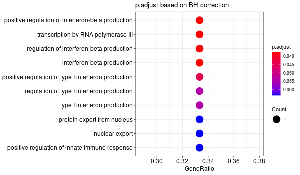


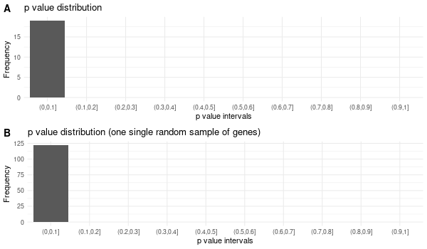
Inferred from TFR2¶
mkdir -p GO_FDR/separate/TFR2/symbol
Rscript GO_enrichment_FDR.R -k "SYMBOL" -G results/separate/TFR2.list -c "BP" -a "BH" -o "default_universe" -d "GO_FDR/separate/TFR2/symbol"
... [1] "Loading input data..." [1] "Warning: using defaut universe automatically provided by the clusterProfiler package" [1] "Done." [1] "Computing GO enrichment..." `universe` is not in character and will be ignored... [1] "Done." [1] "18866 (default) background genes" [1] "15 provided genes; 14 found by `enrichGO`" [1] "Computed GO enrichment (whether significant or not) for 305 distinct GO terms" [1] "Of those 305 GO terms, 0 have a BH-adjusted p-val < 0.1" [1] "Writing outputs tables..." [1] "Done. Writing output images..." Error in `[.data.frame`(d, , 2) : undefined columns selected Calls: upsetplot ... eval_tidy -> split -> split.default -> [ -> [.data.frame Execution halted
No significant enrichment found in any GO term.
Inferred from TFR2 w/o TFR2¶
mkdir -p GO_FDR/separate/TFR2_wo_orig/symbol
Rscript GO_enrichment_FDR.R -k "SYMBOL" -G results/separate/TFR2_wo_original.list -c "BP" -a "BH" -o "default_universe" -d "GO_FDR/separate/TFR2_wo_orig/symbol"
... [1] "Loading input data..." [1] "Warning: using defaut universe automatically provided by the clusterProfiler package" [1] "Done." [1] "Computing GO enrichment..." `universe` is not in character and will be ignored... [1] "Done." [1] "18866 (default) background genes" [1] "14 provided genes; 13 found by `enrichGO`" [1] "Computed GO enrichment (whether significant or not) for 276 distinct GO terms" [1] "Of those 276 GO terms, 0 have a BH-adjusted p-val < 0.1" [1] "Writing outputs tables..." [1] "Done. Writing output images..." Error in `[.data.frame`(d, , 2) : undefined columns selected Calls: upsetplot ... eval_tidy -> split -> split.default -> [ -> [.data.frame Execution halted
No significant enrichment found in any GO term.
Inferred from TMPRSS6¶
mkdir -p GO_FDR/separate/TMPRSS6/symbol
Rscript GO_enrichment_FDR.R -k "SYMBOL" -G results/separate/TMPRSS6.list -f 0.05 -c "BP" -a "BH" -o "default_universe" -d "GO_FDR/separate/TMPRSS6/symbol"
... [1] "Loading input data..." [1] "Warning: using defaut universe automatically provided by the clusterProfiler package" [1] "Done." [1] "Computing GO enrichment..." `universe` is not in character and will be ignored... [1] "Done." [1] "18866 (default) background genes" [1] "7 provided genes; 6 found by `enrichGO`" [1] "Computed GO enrichment (whether significant or not) for 185 distinct GO terms" [1] "Of those 185 GO terms, 46 have a BH-adjusted p-val < 0.05" [1] "Writing outputs tables..." [1] "Done. Writing output images..." ... [1] "Done."
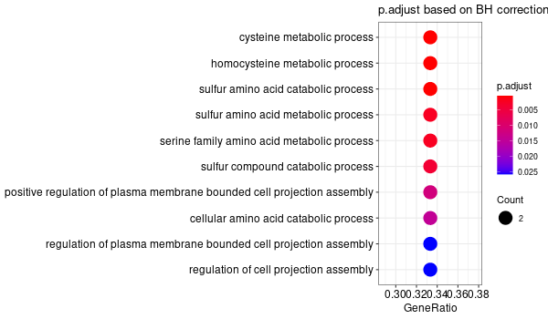
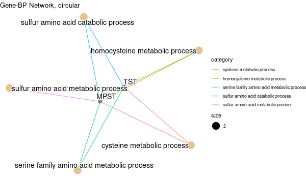
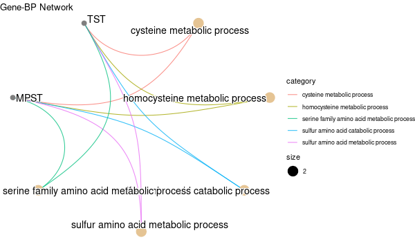


Inferred from TMPRSS6 w/o TMPRSS6¶
mkdir -p GO_FDR/separate/TMPRSS6_wo_orig/symbol
Rscript GO_enrichment_FDR.R -k "SYMBOL" -G results/separate/TMPRSS6_wo_original.list -f 0.05 -c "BP" -a "BH" -o "default_universe" -d "GO_FDR/separate/TMPRSS6_wo_orig/symbol"
... [1] "Loading input data..." [1] "Warning: using defaut universe automatically provided by the clusterProfiler package" [1] "Done." [1] "Computing GO enrichment..." `universe` is not in character and will be ignored... [1] "Done." [1] "18866 (default) background genes" [1] "6 provided genes; 5 found by `enrichGO`" [1] "Computed GO enrichment (whether significant or not) for 165 distinct GO terms" [1] "Of those 165 GO terms, 69 have a BH-adjusted p-val < 0.05" [1] "Writing outputs tables..." [1] "Done. Writing output images..." ... [1] "Done."
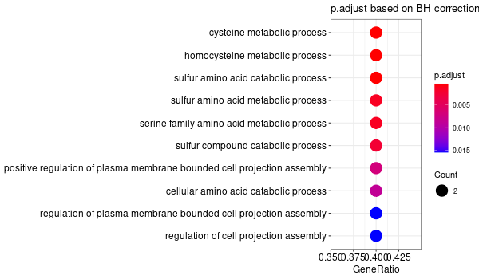